May 2 & 3, 2013
| It's OK, we can talk about it - I'm getting
old. I don't like crowds or loud noises nearly so much anymore, and
my partying days are about a decade behind me. Each year when I
attend Jazz Fest I say that it will be my last. Well, here I am on
about year 13 or so - still going back for more. Maybe I need to
find a support group!
A large part of it is that going to the Fest gives me a chance to see
my dear friend Amy, her husband Julio, and I often get to see Amy's family
as well. This year set a record for coolest temps in memory.
Usually it's as hot as the surface of the sun, but this year we froze a
little. But at least it kept those dreaded crowds at
bay! |
|
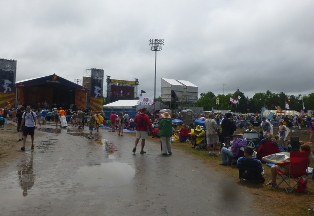 |
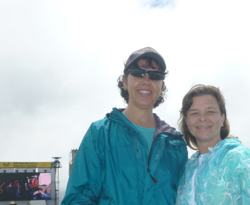 |
| Looking toward the Acura stage. This area is usually packed solid with people. | Me & Amy did the fest by ourselves on Thursday - it was rainy but not too bad. |
|
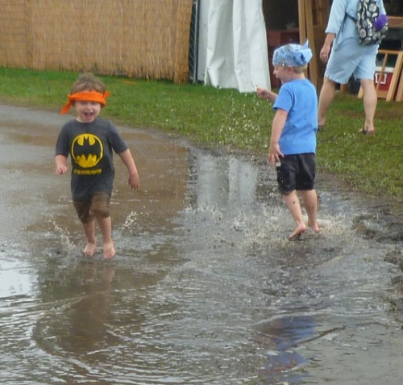 |
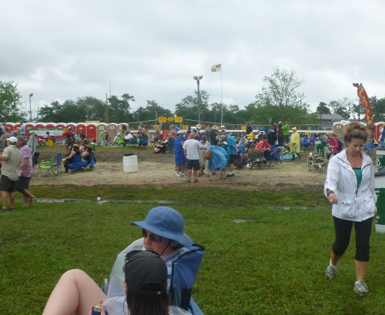 |
| These guys didn't have any problem with the rain or mud, they had the right attitude! | At the Gentilly stage it was the same story - open ground like I've
never seen before. This had to be the least crowded Jazz Fest I've ever attended. |
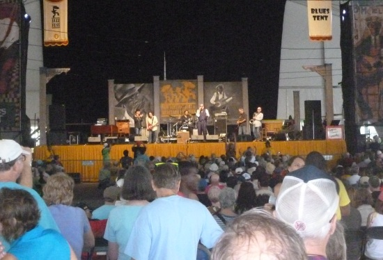 I think this was Jumpin' Johnny Sansone. His last song had a
great line in it, |
|
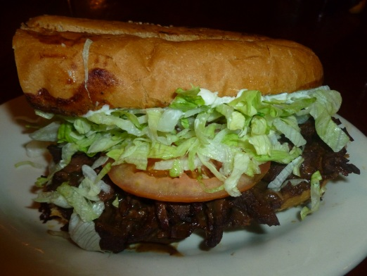 Dinner that night was a dressed Roast Beef Po' Boy from R&O's - one
of my favorites |
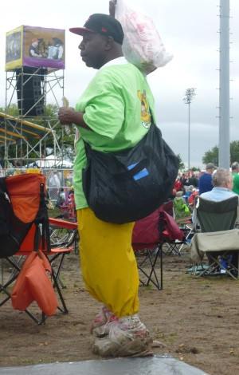 |
| Day 2 - people got creative when dealing with the mud | |
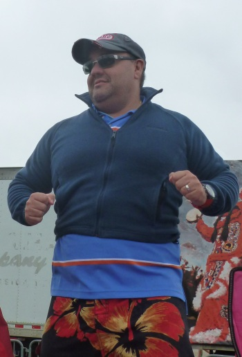 |
|
| Julio borrowed my second jacket, it was only a tiny bit too small. | |
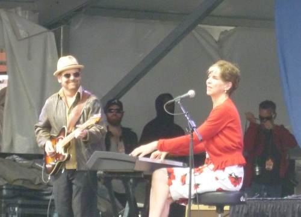 |
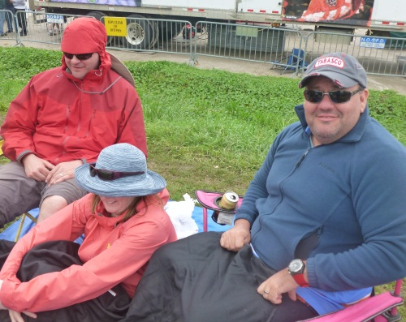 |
| Marcia Ball - we've been fans of hers for nearly 20 years. | Our Canadian friends were a little upset that they didn't bring some of
their nice cold-weather gear down for this strange cold snap. I think it was in the 50's and quite windy! |
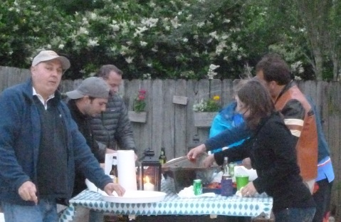 |
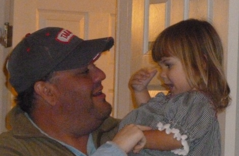 |
| After the fest we headed to Jordan's house (Amy's sister) for a
crawfish boil. They did a first-class job despite the cold weather. The crawfish were worth getting a little chilly for. |
I finally got to meet Julio & Amy's daughter Carmen - what a
cutie. She'll be 3 in September. She has a cute little British accent. |
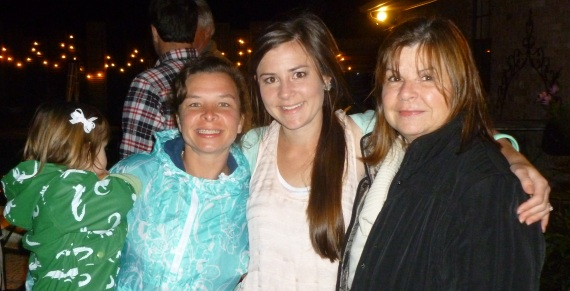 |
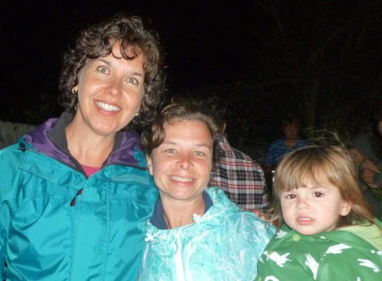 |
| Carmen, Amy, Jordan, and Betsy - lovely ladies all | Here Carmen has lost patience with our picture taking, she wants to go inside! |
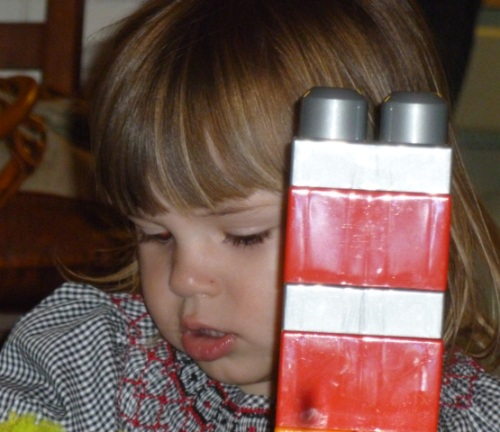 |
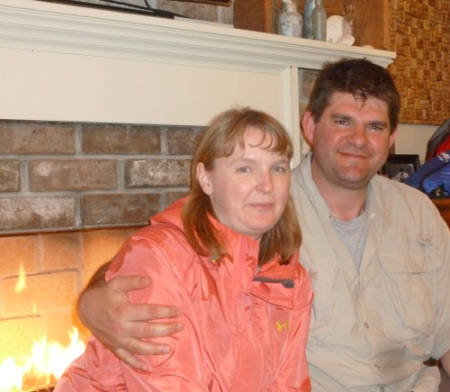 |
| She looks like Amy | I feel so bad that I have forgotten our Canadian friends names! They
were very nice though. |